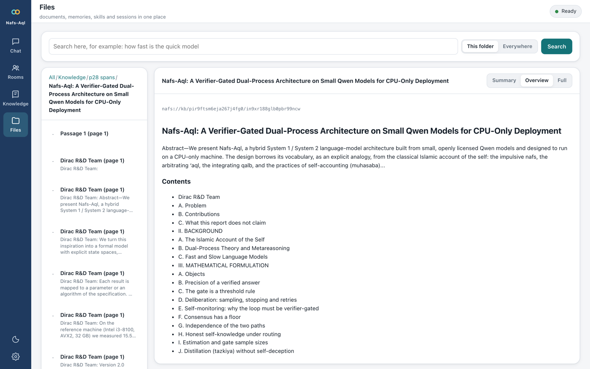
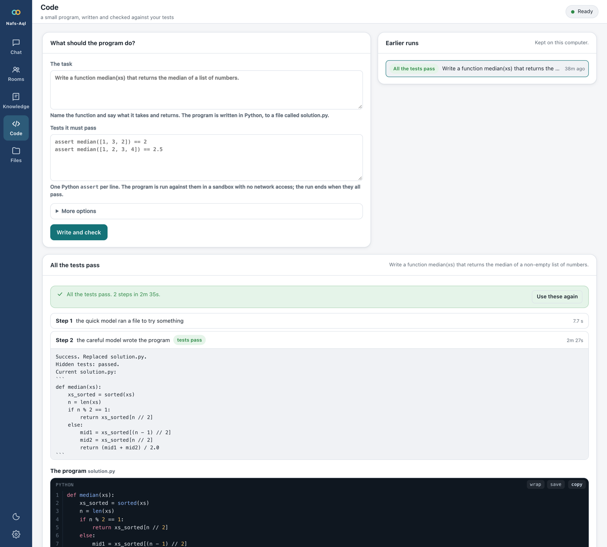
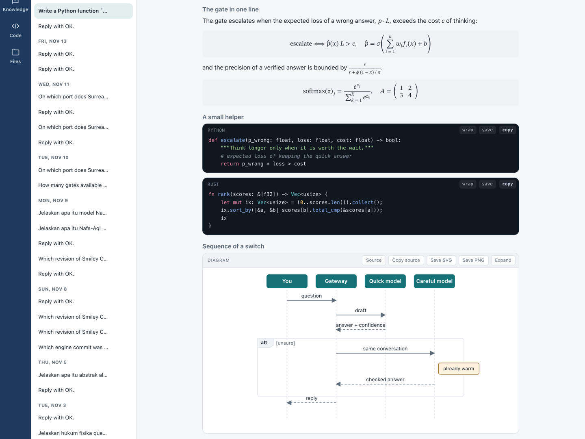
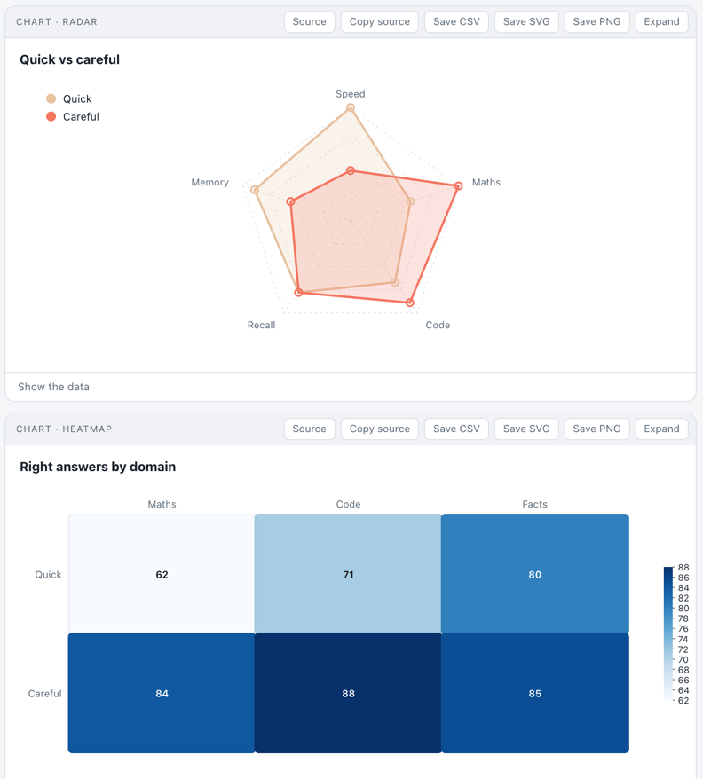

Three modes
Quick always answers at once. Thorough always thinks first. Auto answers quickly and thinks it through when the question needs it. A Why? link on each answer explains the path it took in one sentence.
Each part below says what it does, what was measured, and where it stops. Numbers are from the reference machine: one shared 4-core Intel i3-8100, 32 GB, no GPU.
The quick model is Qwen3-1.7B. The reasoning model is Qwen3-4B-Thinking. Both run as 4-bit GGUF files (Q4_K_M) on the CPU.
Quick always answers at once. Thorough always thinks first. Auto answers quickly and thinks it through when the question needs it. A Why? link on each answer explains the path it took in one sentence.
A threshold rule derived from a decision-theoretic model: escalate when the expected loss of a wrong answer exceeds the cost of thinking. An early check stops an unconfident draft after 32 tokens rather than letting it finish.
With the exact checker visible, the gate reached the same accuracy as always deliberating (6 of 6 each) at 36 % of the cost, in a lab run on 6 mixed tasks.
The gate's learned, calibrated mode is not in use. It is promoted only on held-out evidence, and its ledger holds 1,294 of the 2,900 checked answers the rule asks for. Guessing a question's difficulty before answering it was measured and did not work.
A checker's verdict is final. Agreement between samples is a hint, never proof. Each checker's own error rates were measured with a mutation harness: correct answers it must accept, and altered ones it must reject.
| Checker | What it does | Correct / altered answers | Accepts right answers | Accepts wrong answers (95 % upper bound) |
|---|---|---|---|---|
| Maths | Numeric comparison and SymPy | 2,000 / 2,800 | 1.000 | 0.000 (≤ 0.001) |
| Data format | JSON Schema | 24 / 53 | 1.000 | 0.000 (≤ 0.067) |
| Code | Tests run in an operating-system sandbox with no network (EvalPlus suites) | 364 / 754 | 0.995 | 0.109 (≤ 0.133) |
| Rubric judge | The reasoning model reviews an answer that has no exact check | 23 / 22 | 1.000 | 0.045 (≤ 0.23) |
The code figure is an upper bound inflated by altered programs that behave the same as the original and also pass the larger EvalPlus suites. Source: features and measured results.
Checked An exact check passed: tests, the expected answer, or the required format.
Cross-checked Independent attempts agree, or a review found it sound. A good sign, not a proof.
Not checked An open question has no exact check.
Not sure No answer passed the checks in the time allowed. A note explains why.
You can add a check to a question yourself: the expected answer, Python tests or a JSON format.
Formal proofs are checked by Lean 4 when a toolchain is configured, and the Lean checker is exact. But the reasoning model cannot yet write valid Lean 4, so Lean tasks end in a labelled abstention.
Using the quick model as the judge was measured and rejected: it accepted 0.27 of wrong answers against 0.045.
Everything stays on the machine. A file is searchable by its words seconds after upload, and by meaning soon after.
PDF, Word, PowerPoint, Excel, CSV, LaTeX, web pages, Markdown and text, up to 50 MB each. PDFs are read by their layout: columns in reading order, section titles as headings, tables as rows, running headers and page numbers dropped. No model and no extra download.
In the measurement that adopted it, the layout reader found 166 of 173 section titles, against 11 before, at 15.5 ms a page against 24.0 ms.
A spreadsheet becomes one table per sheet, with the column headings repeated every 40 rows so a passage from the middle still says what its columns are.
Search runs from an index in memory, beside the store that keeps the files. A words search went from 177 ms to 0.086 ms and a combined search from 740 ms to 152 ms on an 847-passage library. Most of what remains is reading the question.
The two result lists are fused by rank. Each passage is also searched by its sentences. A typing slip is matched to the nearest word your documents contain, and a follow-up such as "and how fast is it?" is searched together with the question before it.
A graph of every library is drawn from its text with no model call: 1,306 terms and 5,975 links in under 1 ms in the measured sweep. An optional deeper pass reads each passage with the quick model to add relations. It took 17 to 28 s a passage in that sweep, and runs in the background.
A relation is kept only with the sentence that states it, found in the passage word for word.
With passages the quick model answered 18 of 20 held-out questions, against 2 of 20 without.
Every answer says which of its sentences are in its passages, by words and numbers. In the study, 41 of 42 right answers had every sentence supported, and 38 of 44 answers made up without passages were flagged.
The assistant keeps a short note of each finished turn of your saved chats, in the same local database as the chats. Something you said in one chat can be found in another.
What you say about yourself ("call me …", "I prefer …", "my manager is …", "remember that …") becomes a memory file. You can read, edit and delete every file. Every change is logged with its reason and can be undone.
Measured: 14 of 14 live checks pass. A fact is found from another chat by its words or its meaning, and is gone when you forget it. Reading the notes costs 0.13 to 0.58 s when it happens, and nothing otherwise.
Where it stops: recall quality over a long history has not been measured. The experimental memory-token module is not used: the trained module gave the same memory whatever was asked, and the gateway recognises that and answers from passages instead.

Documents, memories, skills and saved chats are named in one tree: nafs://kb/…, nafs://memory/…, nafs://skills/…, nafs://sessions/…. There is no second store: each item stays where it already lives.
The design follows OpenViking and is re-implemented in Rust. Two ideas were measured and left out: a summaries-first prompt lost answers at the same prompt size, and a rule that guesses which document a question is about picked the right one 5 times in 11.
The default engine is Smiley Core, ParagonCorp's Rust CPU engine. Peregrine, RantAI's Rust CPU engine, is the second. The quick and the reasoning model can each run on either, and the Speed page compares them on the same questions, taking turns. llama.cpp is one command away (make up-llama), and vLLM's CPU backend in Docker is the fourth profile.
Typical answer 0.49 s on Smiley Core and 0.53 s on Peregrine (Peregrine faster in 7 of 12 pairs, p = 0.77). Peregrine reads prompts faster (88 against 67 tokens a second); Smiley Core writes faster (17.0 against 14.9).
51.2 s against 62.7 s for a typical reasoned answer, faster in 9 of 9 pairs (p = 0.004), all answers right on both. Smiley Core stays the default.
Four people at once: 39.4 against 31.6 tokens a second in total. Embedding documents: 1.41× faster with the same vectors. Building the knowledge graph four passages at a time: 2.5× the old speed, with every reply valid JSON.
Engine alone: 14.3 against 12.6 tokens a second on the quick model and 7.4 against 6.6 on the reasoning model. Through the whole gateway, twelve checked prompts took 131 s against 303 s, 9 of 9 checked on both, faster in 10 of 12 pairs.
The engine runs within 60 to 95 % of the machine's memory bandwidth, so more parallelism was not the gain. It reads prompts with four cores and writes tokens with three: prompt reading +23 % on both models, and an answer from documents arrives 16 % sooner.
Finished conversations keep their cached state. Switching between kinds of request fell from 5.8 s and 14.1 s of prompt reading to 0.1 s and 0.2 s on the two models, with byte-identical answers.
While you read an answer, the model that answered reads the conversation as the next turn will show it, and then the other model does. The next question finds its prompt already read. Anything you send stops the reading at once. This follows the ShadowPrefill paper (Qiu et al., arXiv 2611.13176) and, in 0.2.0, ideas from FreeToken (Yang et al., arXiv 2608.16157).
| Change | What it removes | Measured |
|---|---|---|
| A continued conversation takes its cache | The copy out at the end of a request and back in at the start of the next | Hand-off 84 ms to 0 at 512 tokens and 240 ms to 0 at 2,048 tokens on the 1.7B model; 116 ms and 457 ms to 0 on the 4B model |
| First token from the last prompt chunk | One pass over the weights per request | About 30 ms on the 1.7B model and 90 ms on the 4B model. With the change above, a request that extends a 2,048-token conversation by 8 tokens: 329 to 229 ms and 1,075 to 568 ms |
| Idle threads take unclaimed blocks | Waiting for the slowest worker on a shared machine | Four threads: the 1.7B model wrote 19 % faster and read 14 % faster (12 of 12 paired rounds each); the 4B model 33 % (8 of 8) and 10 % (7 of 8). Three threads: inside noise on the 1.7B model, 8 % and 15 % on the 4B model |
| The model file is read ahead at start | Page-by-page loading during the first request | First request on a model file the system had not cached: 9.2 s against 14.6 s (three rounds). A warm request of the same size takes 5 s |
| The answering model reads between turns | Re-reading the previous turn in its replayed form | First token 4.25 s to 0.71 s (quick), 18.6 s to 2.4 s (reasoning) |
The default stays three threads to write and four to read; a fourth writing thread was not compared with three head to head after the change. FreeToken's own mechanisms are for Mixture-of-Experts models on a GPU. What was taken is the reasoning behind them. Source: FreeToken assessment and decision 026.
Speculative decoding, 1-bit weights (0 of 12 exact-answer prompts against 9 for the dense model), cache-blocking and concurrent hedging were measured and are off. Warming the careful model while the quick one drafts made every quick answer 75 % slower, so it is off unless you choose it.
Say what the function should do and give the tests it must pass, one Python assert per line. The run ends when the tests pass or the attempts are used up.
On 12 tasks that start with no file, the quick model's first step used to try to run the example file from its own instructions 11 times, and one task passed on that step. After a prompt fix, 12 of 12 first steps write the program and all 12 pass, with a median of 7.9 s.
An edit that does not compile is refused before any test run, at a cost of 37 ms. The loop rolls back to the best version, and ends a run as stuck when the same failure repeats.
Where it stops: it is for one function or a small file. One run is served at a time. Large changes across many files are out of scope.



A room is a shared chat. Everyone connected sees each question and the answer as it is written. A room can be exported, and deleted for good with everything made from it. There are no accounts: anyone who can reach the service can read any room.
The model writes Markdown; a converter in the gateway makes the file. Raw HTML is shown as text, and a cell that a spreadsheet would run as a formula is stored as text.
In Advanced mode: paired experiments with confidence intervals and exact tests, where each second of an answer went, a drift monitor, and release gates computed from stored runs, never typed in by hand.
The name. Nafs-Aql joins two classical terms, nafs (the impulse that acts first) and ʿaql (the reason that restrains and corrects it), as a naming analogy for a quick answer and a considered one. Nothing in how the assistant works depends on the analogy.